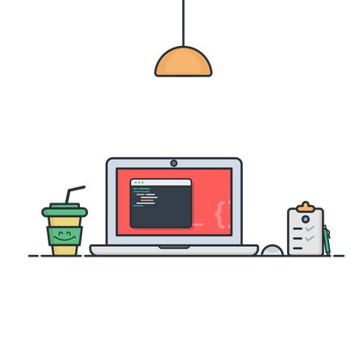
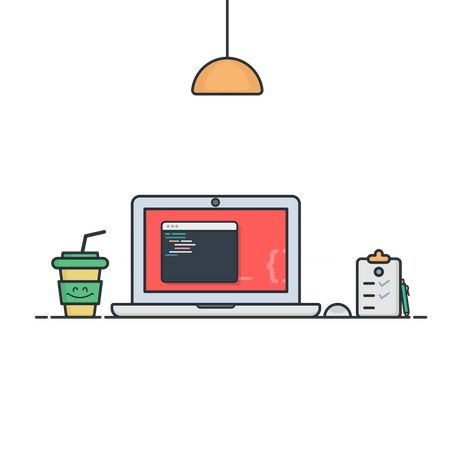

«Javascript es la tercera pieza fundamental del desarrollo web»
1Lenguaje orientado a objetos:
Javascript es un lenguaje orientado a objetos. Que un lenguaje esté orientado a objetos quiere decir que utiliza clases y objetos como estructuras que permiten organizarse de forma simple y son reutilizables durante todo el desarrollo. Otros lenguajes orientados a objetos son Java, Python o C++.
2De alto nivel:
Que Javascript sea un lenguaje de alto nivel significa que su sintaxis es fácilmente comprensible por su similitud al lenguaje de las personas. Se le llama de “alto nivel” porque su sintaxis se encuentra alejada del nivel máquina, es decir, del código que procesa una computadora para ejecutar lo que nosotros programamos.
3Muy utilizado por desarrolladores:
A la hora de elegir si aprender o no un nuevo lenguaje, no sólo hay que informarse sobre el tipo de lenguaje o su curva de aprendizaje, si no también su demanda en el mercado. Javascript es en la actualidad uno de los lenguajes más demandados de los últimos años por su versatilidad y su infinita capacidad para crear plataformas cada vez más atractivas.
GALERIA


 

Librerías de Javascript:

jQuery

React
AngularJS
Vue.js